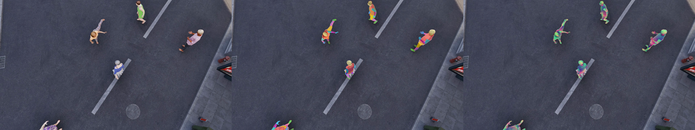
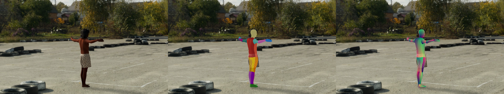
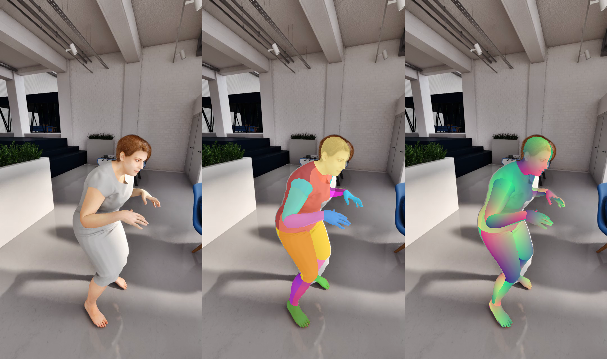

DensePose-24 SMPL-X IUV check
Left = movie frame. Middle = part (I) coloring. Right = UV (R=U,G=V). Check parts are anatomically right and UV gradients are smooth per part.
1 torso_back2 torso_front3 hand_right4 hand_left5 foot_left6 foot_right7 upperleg_right_back8 upperleg_left_back9 upperleg_right_front10 upperleg_left_front11 lowerleg_right_back12 lowerleg_left_back13 lowerleg_right_front14 lowerleg_left_front15 upperarm_left_front16 upperarm_right_front17 upperarm_left_back18 upperarm_right_back19 lowerarm_left_front20 lowerarm_right_front21 lowerarm_left_back22 lowerarm_right_back23 head_right24 head_left
20240620_5_250_archmodelsvol8_dollyz — 5 people

20240625_1_2337_hdri — 1 people

20240806_1_250_ai1101_vcam — 1 people
